05-terraform-plugin-cache-screenshots.pdf in this folder.init downloads a separate copy into .terraform/providers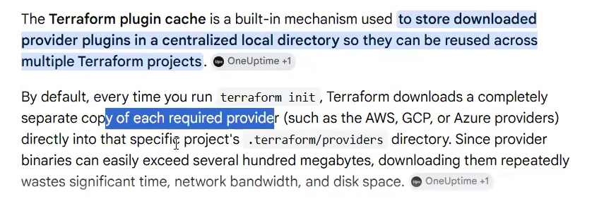
terraform init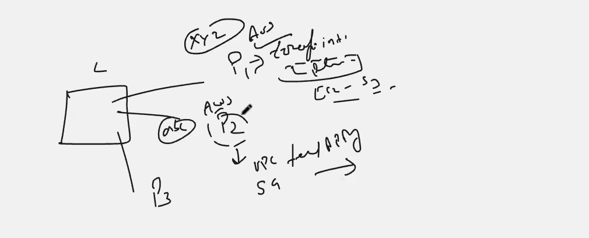
mkdir a b c in ~/project1, create s3.tf in folder a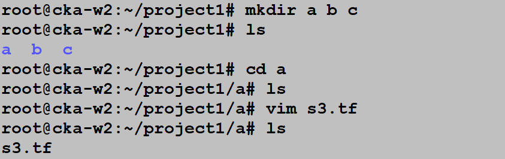
s3.tf — aws_s3_bucket.first (linuxterraform12345, tag Name=my_buck)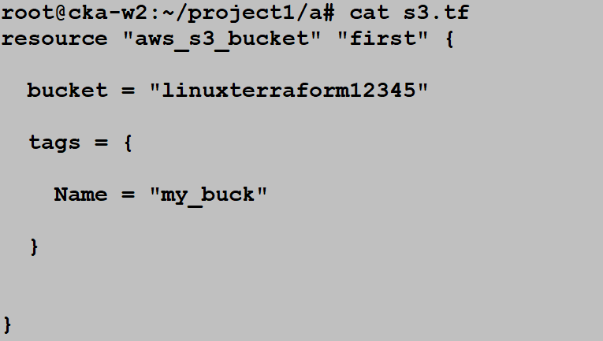
terraform plan before init → Inconsistent dependency lock file, run terraform init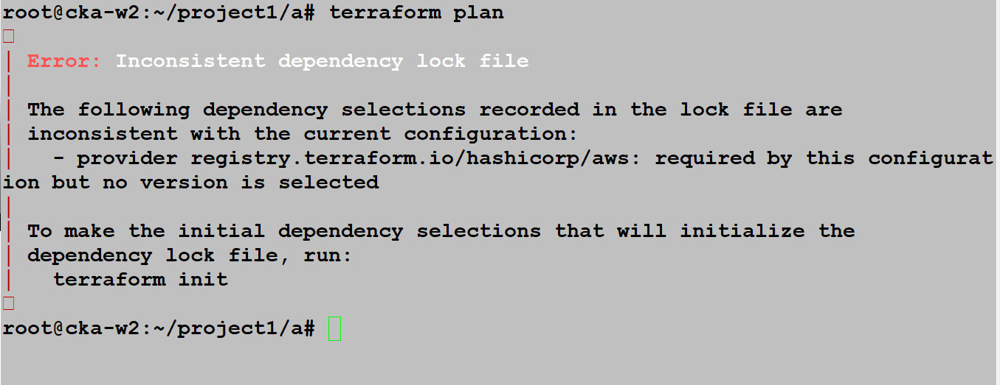
.terraform folder is 874M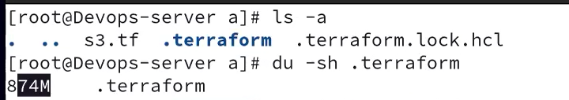
.terraformrcplugin_cache_dir and disable_checkpoint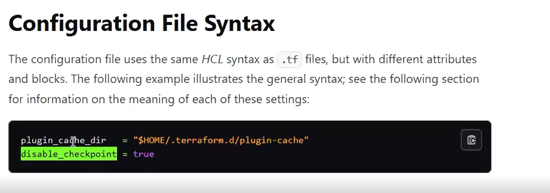
~/.terraformrc contents in vim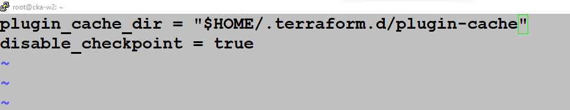
touch .terraformrc; ~/.terraform.d holds only checkpoint_signature — no plugin-cache yet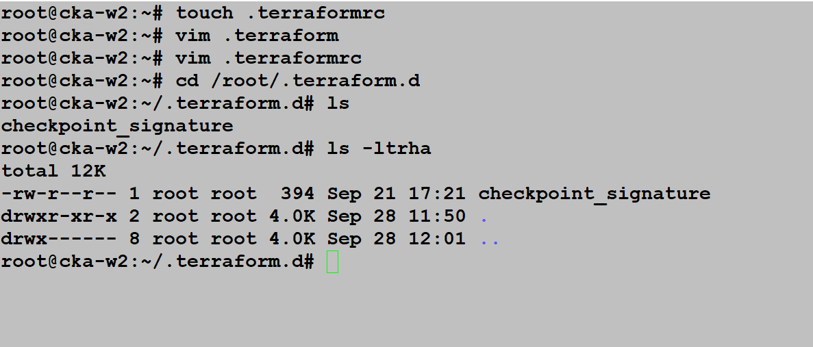
terraform init → plugin cache dir cannot be opened: no such file or directory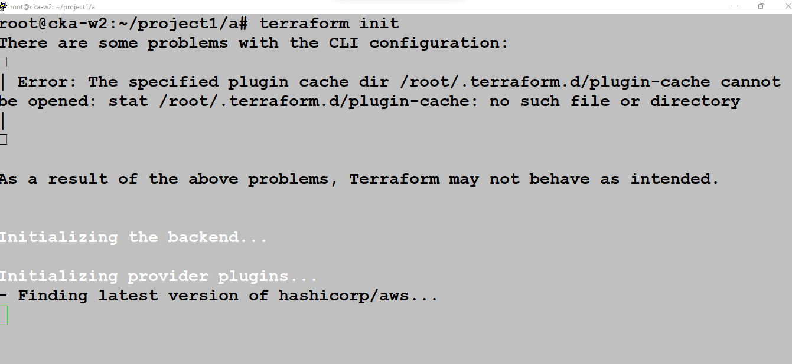
.terraform.lock.hcl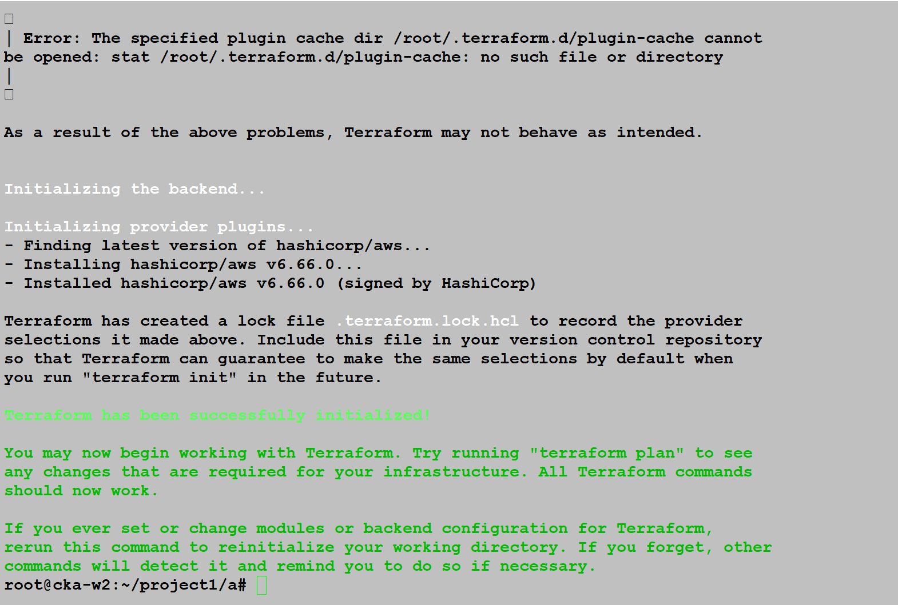
plugin-cache folder now present in ~/.terraform.d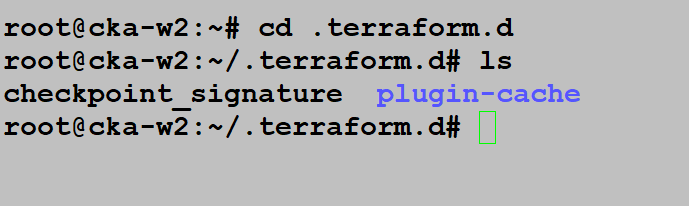
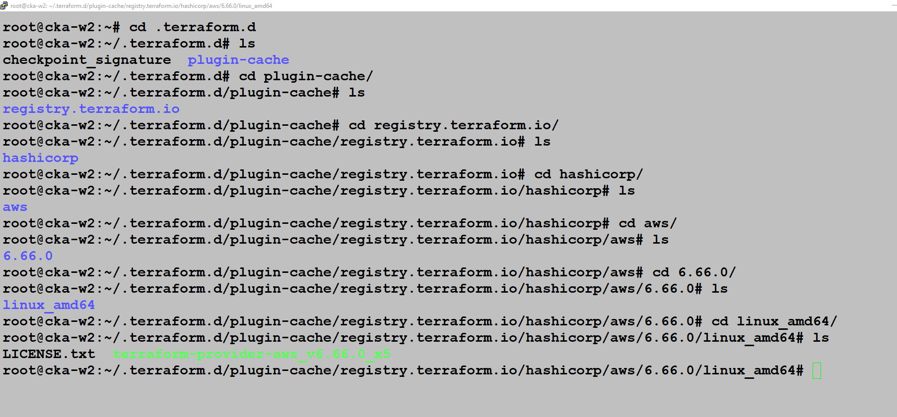
tree ~/.terraform.d — 822M plugin-cache holding the single AWS provider copy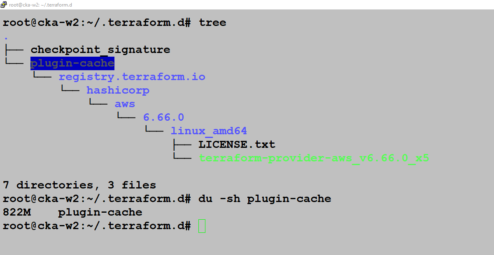
.terraform — linux_amd64 is a symlink into the cache, 0 files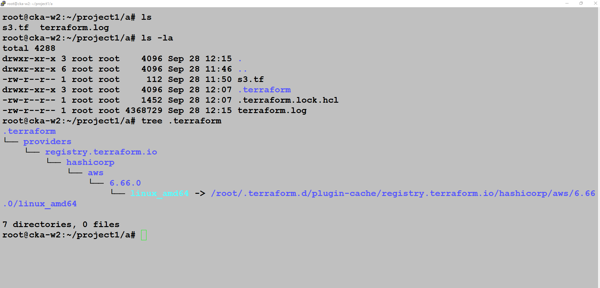